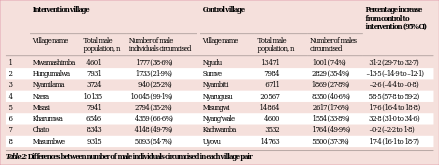
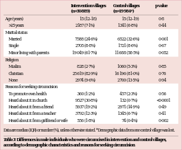

|

corpus-oa-validation/10.1016_S0140-6736(16)32055-4/tables/table2/table.svg.png
|
| Table 2: Differences between number of male individuals circumcised in each village pair |
corpus-oa-validation/10.1016_S0140-6736(16)32055-4/tables/table2/table.svg.html
|
|

corpus-oa-validation/10.1016_S0140-6736(16)32055-4/tables/table3/table.svg.png
|
| Age (years) >25 years Marital status Married Single Minor living with parents Religion Muslim Christian None Reasons for seeking circumcision To promote own health Heard about it in church Heard about it from a friend Heard about it from a teacher Heard about it from girlfriend or wife Data are median (IQR) or number (%), unless otherwise stated. *Demographic data from one control village was lost. |
15 (12–18) 2187 (7·1%) 7588 (24·6%) 2705 (8·8%) 19 049 (61·7%) 828 (2·7%) 25 619 (82·9%) 2974 (9·6%) 360 (1·2%) 9527 (30·8%) 5937 (19·2%) 3792 (12·3%) 556 (1·8%) |
15 (12–19) 1341 (6·8%) 6522 (32·6%) 1721 (8·6%) 11 688 (58·5%) 1060 (5·3%) 16 196 (81·0%) 2700 (13·5%) 457 (2·3%) 132 (0·7%) 2971 (14·9%) 1345 (6·7%) 74 (0·4%) |
0·8 0·44 0·001 0·67 0·052 0·85 0·76 0·94 0·56 <0·0001 0·49 0·41 0·002 |
| Table 3: Differences in male individuals who were circumcised in intervention and control villages, |
| according to demographic characteristics and reasons for seeking circumcision |
corpus-oa-validation/10.1016_S0140-6736(16)32055-4/tables/table3/table.svg.html
|

corpus-oa-validation/10.1016_S0140-6736(16)32055-4/tables/table1/table.svg.png
|
| Total population per village* Number of male individuals per village* Household size* Sex ratio (number of males per 100 females)* National rank of village primary school (based on test performance)† Data are median (IQR). *From United Republic of Tanzania 2012 Population and Housing Census. ^{19} Examinations Council of Tanzania (2014 data). |
16 541 (11 451–18 112) 7936 (5574–8829) 5·9 (5·8–6·3) 96·5 (94·5–99·5) 4586 (2010–5110) |
22 033 (11 543–30 319) 10 728 (5656–14 814) 5·9 (5·5–6·7) 94·5 (92–97·5) 4151 (860–8358) †From National |
| Table 1: Characteristics of study villages |
corpus-oa-validation/10.1016_S0140-6736(16)32055-4/tables/table1/table.svg.html
|